MARKET NEWSROOM
The reporting
behind the signals
A visual source ledger for the selected market, connecting original reporting with the current intelligence view.
LEAD REPORTING
Stories setting the frame
The opening stories in the current regional source set.

The Guardian · 2026-09-13 03:56:42 UTC
News live: first case of bird flu in endangered Australian sea lion confirmed; WA police hunting for two men after Perth shooting
VIEW STORY ↗
ABC News · 2026-09-13 03:51:54 UTC
I'm ready to be Swans captain, says Gulden
VIEW STORY ↗
ABC News · 2026-09-13 03:24:10 UTC
'You've got to be loyal, good times and bad': Crows fans commiserate finals loss
VIEW STORY ↗
ABC News · 2026-09-13 03:23:35 UTC
Breaking: SA records first bird flu case in sea lion
VIEW STORY ↗MORE HEADLINES
Follow the reporting
The remaining 69 stories in the current source order.
Headlines 005—016 12 stories
 005
005ABC News · 2026-09-13 03:22:15 UTC
↗Melbourne man facing charges linked to extremist group chat, AFP say
 006
006ABC News · 2026-09-13 03:04:36 UTC
↗007PM defends late mother against Hanson public housing 'attack'
ABC News · 2026-09-13 02:38:55 UTC
↗008Trump says reunification of Ireland would be 'fantastic' while visiting on golf trip
ABC News · 2026-09-13 01:54:22 UTC
↗009Warriors moved to Eden Park for Knights finals showdown
MacroBusiness · 2026-09-13 01:48:42 UTC
↗010ABC talks immigration in an economic vacuum
ABC News · 2026-09-13 01:31:24 UTC
↗011Wells willing to change digital harm proposal to win Coalition support
ABC News · 2026-09-13 01:28:49 UTC
↗Immigrants wary of becoming political fodder as migration debate heats up
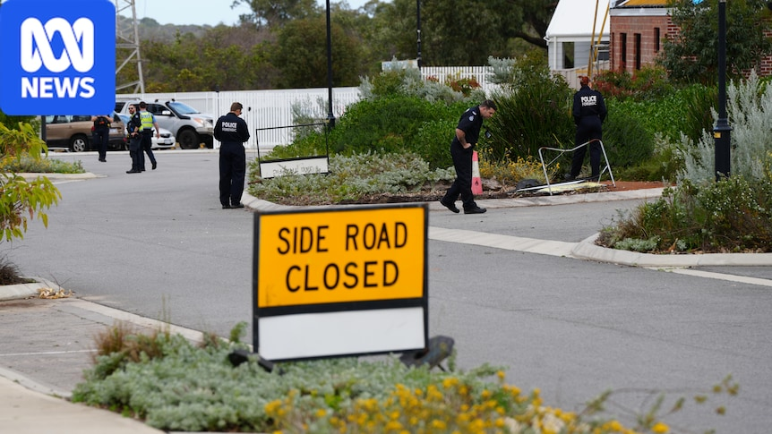
012ABC News · 2026-09-13 01:27:27 UTC
↗Man shot in Perth's Hamilton Hill as police search for two suspects
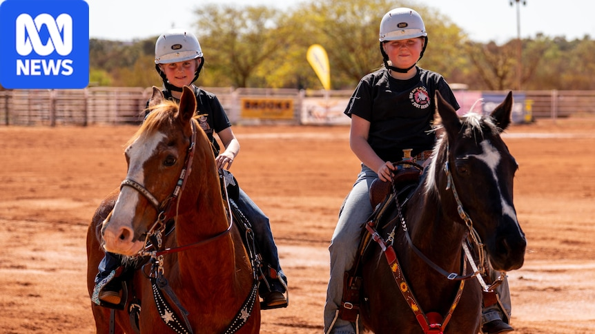
013ABC News · 2026-09-13 01:18:12 UTC
↗014Newman Rodeo's return for first time since 2019 draws 'royalty'
ABC News · 2026-09-13 01:13:15 UTC
↗015Trump takes call from Saudi crown prince amid renewed fighting in Yemen
ABC News · 2026-09-13 00:58:22 UTC
↗016Root says England's back from 'chaos' after Pakistan series sweep
SMH Business · 2026-09-13 10:55:34+10:00
↗You’ve been put on a performance management plan. Are you on the way out?
Headlines 017—028 12 stories
017
SMH Business · 2026-09-13 10:18:55+10:00
↗Top tech executives call for slowing of AI’s development
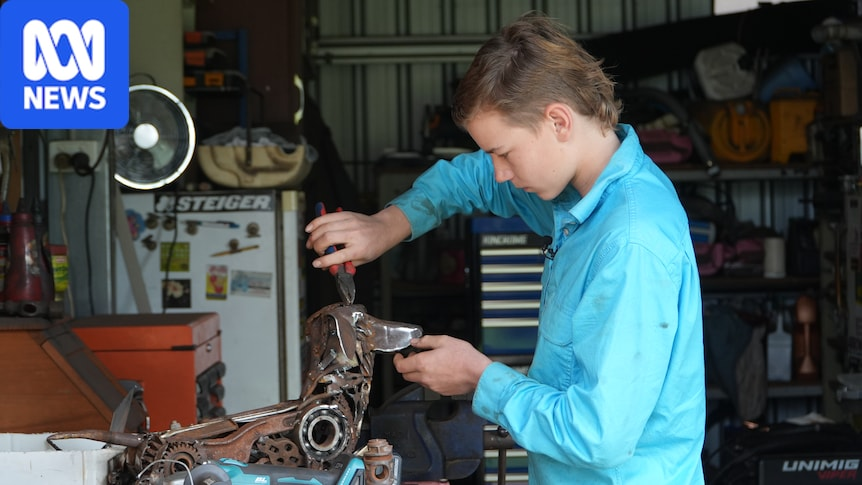
018ABC News · 2026-09-13 00:14:38 UTC
↗When Charlie isn't at school, he's welding thousand dollar scrap sculptures
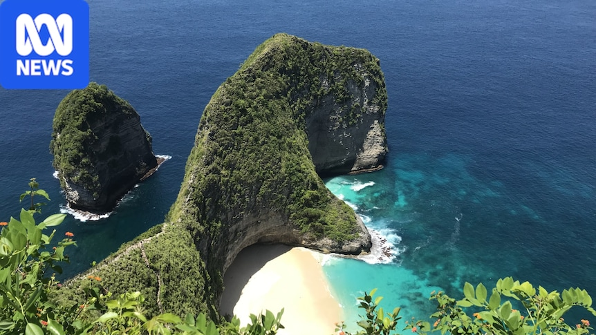
019ABC News · 2026-09-13 00:06:26 UTC
↗020Australian tourist dies after falling from beach cliff on island near Bali
ABC News · 2026-09-13 00:00:26 UTC
↗021Women say outback contest 'not just bikinis and beauty'
ABC News · 2026-09-12 23:35:36 UTC
↗SA's road toll rises after two separate fatal crashes in a day
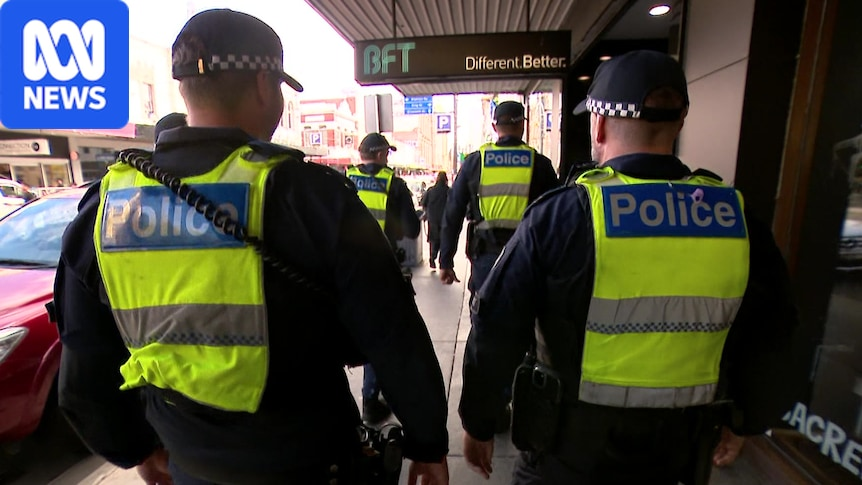
022ABC News · 2026-09-12 23:32:18 UTC
↗Labor pledges more police and new academy in Melbourne's west
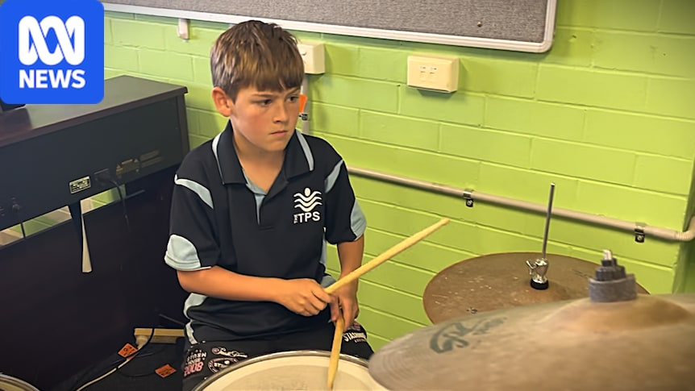
023ABC News · 2026-09-12 23:00:33 UTC
↗No music teacher until high school? This charity fills the gap
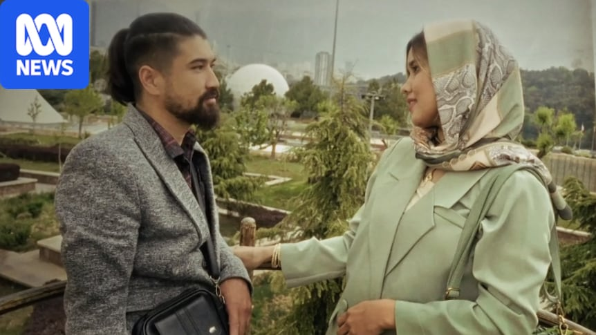
024ABC News · 2026-09-12 23:00:00 UTC
↗025Love when you don't know when you'll meet again
The Guardian · 2026-09-12 20:00:43 UTC
↗‘Small price to pay’: the young homeowners welcoming falling house prices even as it hurts them
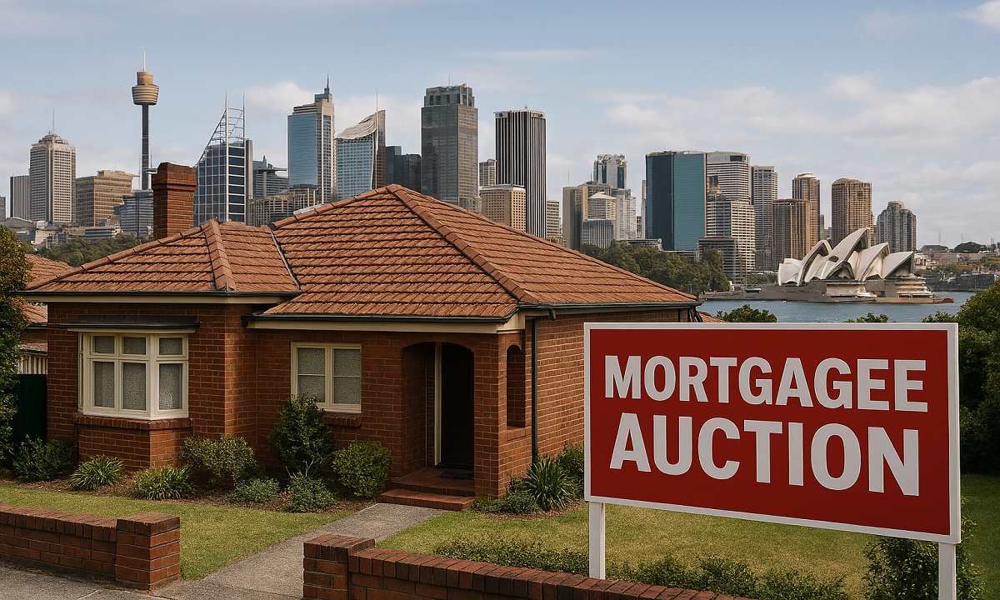
026MacroBusiness · 2026-09-11 22:50:49 UTC
↗027No spring bounce for Australia’s auction market
Yahoo Finance · 2026-09-11 21:00:04Z
↗028ETF League Tables: Inflows of $736M for Dimensional
Yahoo Finance · 2026-09-11 20:56:36Z
↗Jim Cramer Praises Microsoft (MSFT) for Its Permian Power Plan with Chevron (CVX)
Headlines 029—040 12 stories
029 036
036
Yahoo Finance · 2026-09-11 20:55:02Z
↗030Danaos Stock Just Hit a New All-Time High
Yahoo Finance · 2026-09-11 20:52:31Z
↗031Gilead Wins Appeals Court Ruling Blocking Imported HIV Drug Sales
Yahoo Finance · 2026-09-11 20:51:36Z
↗032Stocks Shake Off CPI Report and Rally on Lower Oil Prices
Yahoo Finance · 2026-09-11 20:47:44Z
↗033DELL Stock Just Hit a New All-Time High. Here's Why.
Yahoo Finance · 2026-09-11 20:44:53Z
↗034They Converted $33,000 a Year to a Roth for a Decade and the Tax Bill Was $0 Every Single Year. The Standard Deduction Paid It
Yahoo Finance · 2026-09-11 20:43:30Z
↗035Stellantis’ Belvidere Reopening Slips Again as Brampton Faces Possible Closure
Yahoo Finance · 2026-09-11 20:43:01Z
↗GameStop Director Alain Attal Buys 5,000 Shares for $100,000. Does This Predict Good Times Ahead for GME?
036Yahoo Finance · 2026-09-11 20:41:28Z
↗Stock Market Today: Dow Soars 500 Points Amid Rate-Hike Bets; Apple Advances
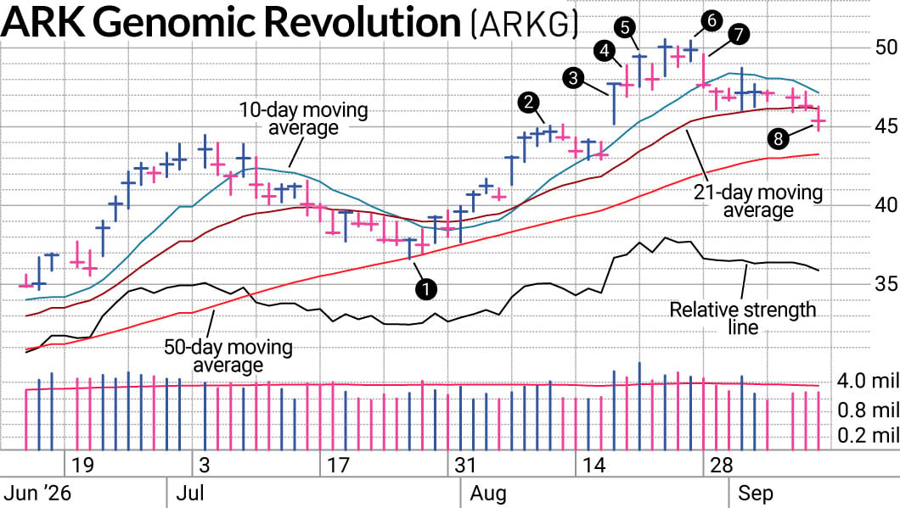
037Yahoo Finance · 2026-09-11 20:37:51Z
↗038How Cathie Wood's Fund Gave Us A Back Door To Moderna's Breakthrough
Yahoo Finance · 2026-09-11 20:27:59Z
↗SpaceX CFO Touts New $13 Billion AI Deal, Upcoming Starship Milestones
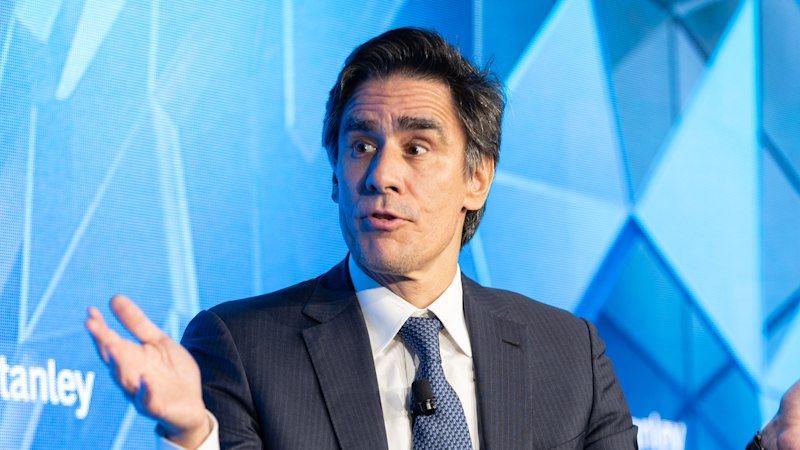
039SMH Business · 2026-09-12 05:00:00+10:00
↗After axing 3500 jobs, ANZ chief’s grand plan has a long way to go
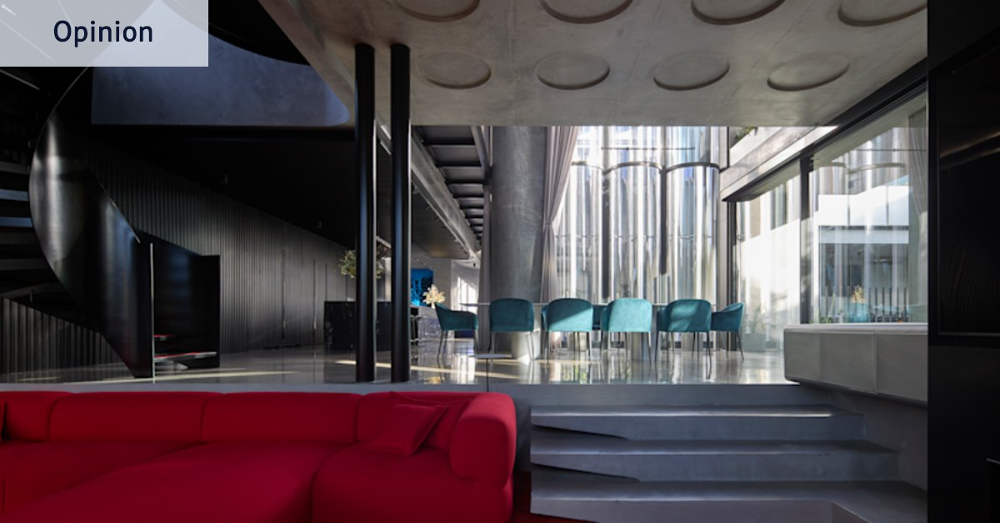
040SMH Business · 2026-09-12 05:00:00+10:00
↗‘A love letter to concrete and steel’: This suburban house is different
Headlines 041—052 12 stories
041 046
046
Yahoo Finance · 2026-09-11 17:33:49Z
↗042172-year-old bank sees 400% upside for 'federal bank' token
MacroBusiness · 2026-09-11 14:05:20 UTC
↗043Why Australians need to question their Superannuation System: The 10 Reasons it’s Not Fit for Purpose
MacroBusiness · 2026-09-11 14:01:08 UTC
↗Weekend reading and MB media appearances
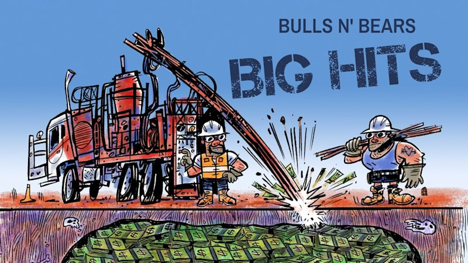
044SMH Business · 2026-09-11 16:47:37+10:00
↗045Big Hits: PolarX, Sunstone Metals and Manuka Resources
The Guardian · 2026-09-11 06:42:27 UTC
↗One flight cancelled every three days due to staff shortages – as it happened
046SMH Business · 2026-09-11 16:00:57+10:00
↗047ASX Runners of the Week: Iondrive, Australasian, Aruma & Neurizon
The Guardian · 2026-09-11 06:00:49 UTC
↗Australian fuel prices set to rise by 30c as global markets react to ‘deadly cocktail’
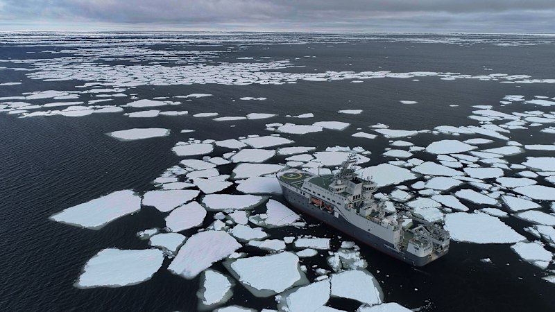
048SMH Business · 2026-09-11 15:30:00+10:00
↗049Chinese ship takes Arctic shortcut: Smart business, or a geopolitical flex?
SMH Business · 2026-09-11 13:04:54+10:00
↗ASX sheds $90b in a week amid rate rise fears, oil price surge
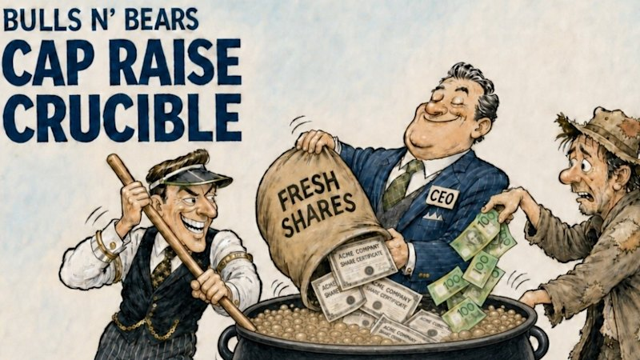
050SMH Business · 2026-09-11 13:02:40+10:00
↗Cap Raise Crucible: Canaccord leads big mining dash for cash
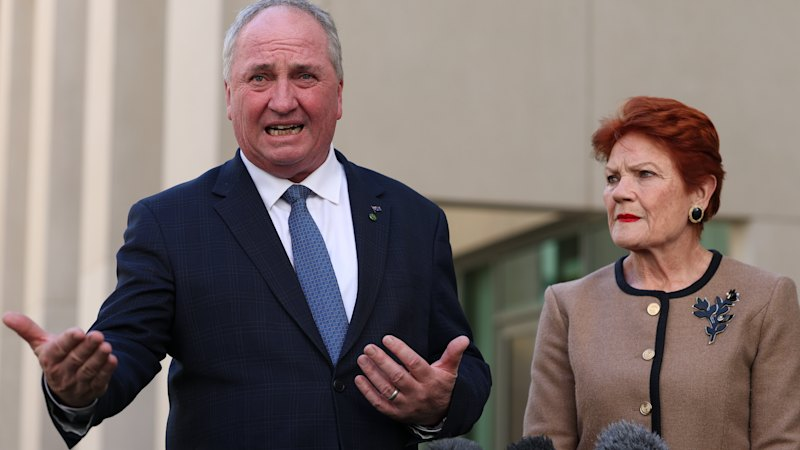
051SMH Business · 2026-09-11 12:44:07+10:00
↗052Superannuation is too important for populism
The Guardian · 2026-09-11 02:39:56 UTC
↗Former Carlton president apologises to ex-wife as lewd photo defamation case settles
Headlines 053—064 12 stories
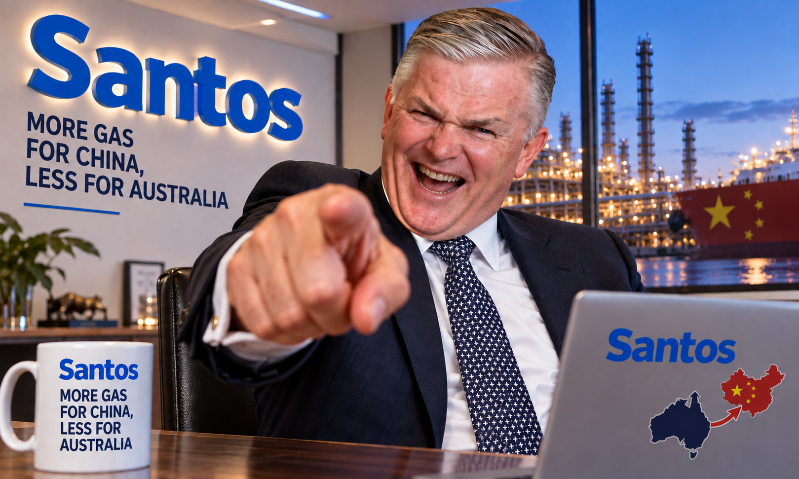
053MacroBusiness · 2026-09-11 02:30:38 UTC
↗Australia sacrificed to preserve Santos
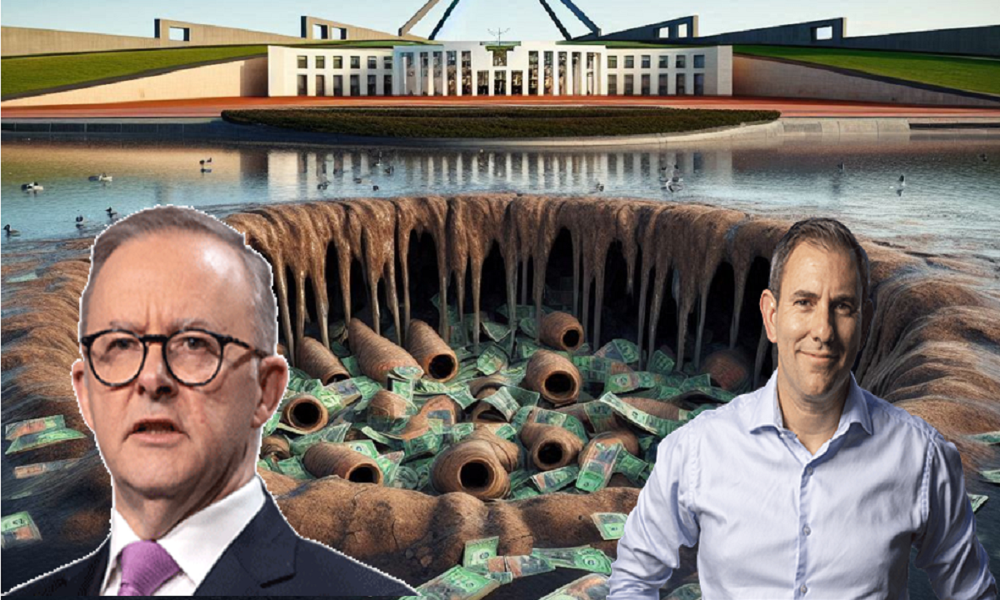
054MacroBusiness · 2026-09-11 02:00:50 UTC
↗Proof Australians are drowning in taxes
 055
055MacroBusiness · 2026-09-11 01:30:10 UTC
↗056Iron ore bloodletting begins
MacroBusiness · 2026-09-11 01:00:49 UTC
↗057New Zealand’s five-year housing correction has further to run
MacroBusiness · 2026-09-11 00:30:28 UTC
↗058Gold schmould
MacroBusiness · 2026-09-11 00:00:57 UTC
↗059Australian businesses fear for their future
MacroBusiness · 2026-09-10 23:30:53 UTC
↗Australian dollar smashed as growth scare builds
 060
060MacroBusiness · 2026-09-10 22:45:05 UTC
↗Oil explodes as price suppression fails
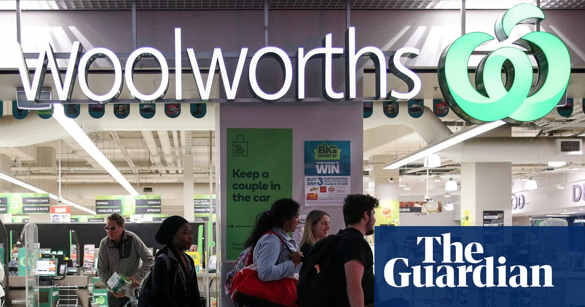
061The Guardian · 2026-09-10 22:05:29 UTC
↗062Woolworths increased prices of at least four ‘family staples’ during ‘Price Freeze’ promotion
MacroBusiness · 2026-09-10 22:00:37 UTC
↗063Housing prices crash, first home buyers surge
SMH Business · 2026-09-11 05:00:00+10:00
↗Can someone ‘please explain’ One Nation’s messaging muddle?
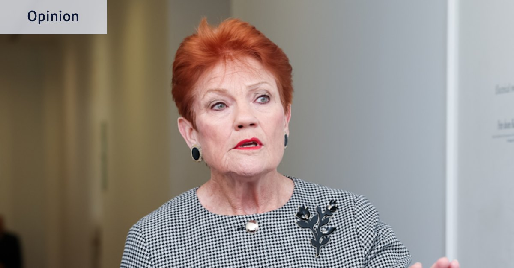
064SMH Business · 2026-09-11 05:00:00+10:00
↗Early access to super benefits one group. You’re probably not a part of it
Headlines 065—073 9 stories
065
SMH Business · 2026-09-11 05:00:00+10:00
↗Fancy a Sydney ferry for $2.5m? Floating harbour restaurant for sale
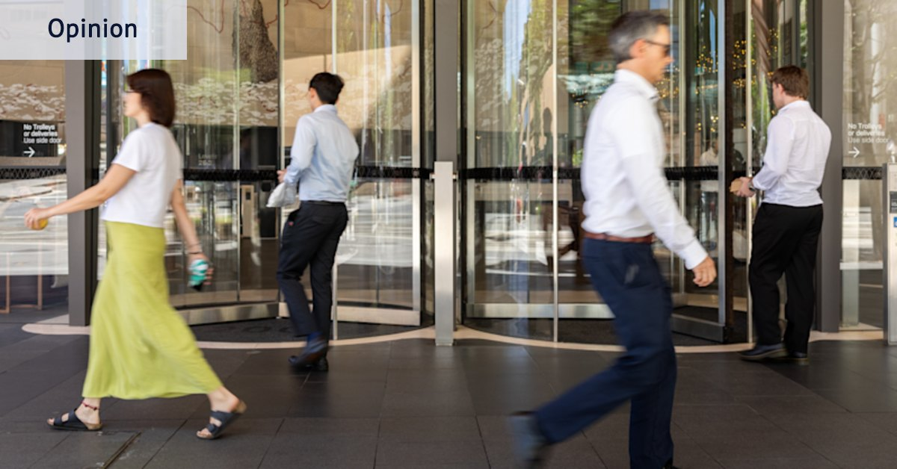
066SMH Business · 2026-09-11 05:00:00+10:00
↗When did we become so concerned about trivial things at work?
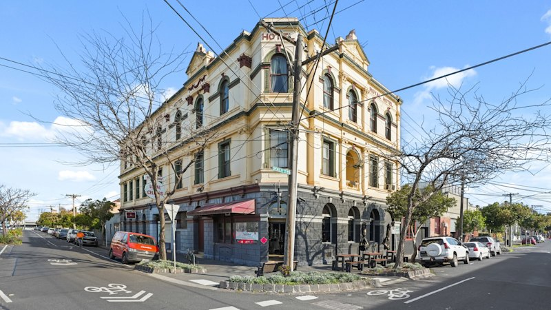
067SMH Business · 2026-09-11 05:00:00+10:00
↗‘I’m stoked’: Change of fortune for village pub as new owner vows to revive it
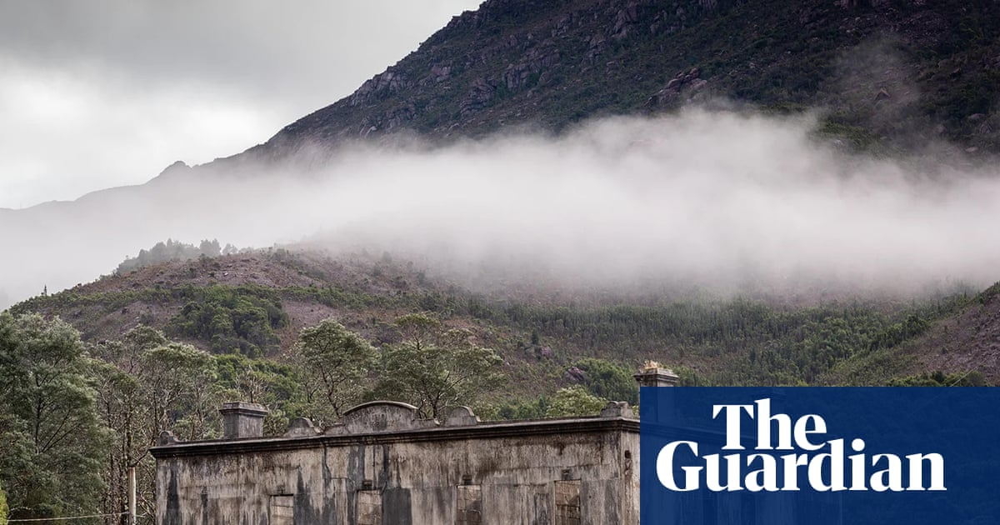
068The Guardian · 2026-09-10 15:00:39 UTC
↗069It’s a remote, roofless ruin in a Tasmanian ghost town – and it just sold sight unseen for $300,000
MacroBusiness · 2026-09-10 14:01:40 UTC
↗070The RBA is worried about rental inflation
SMH Business · 2026-09-10 18:10:00+10:00
↗071She lost her sight. Her Wall Street billionaire father bet on a daring new treatment
SMH Business · 2026-09-10 17:44:06+10:00
↗072Miners and banks send ASX tumbling as oil prices, bond yields rise
SMH Business · 2026-09-10 16:07:36+10:00
↗Australia softens local gas supply rules, easing fears in Asia
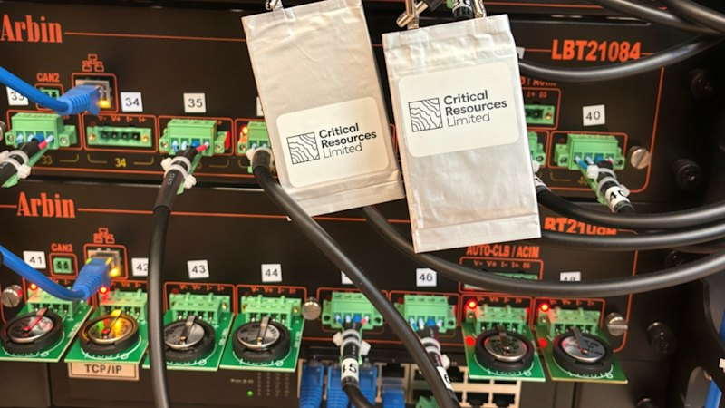
073SMH Business · 2026-09-10 15:31:56+10:00
↗